Otro loco mas - Malbec
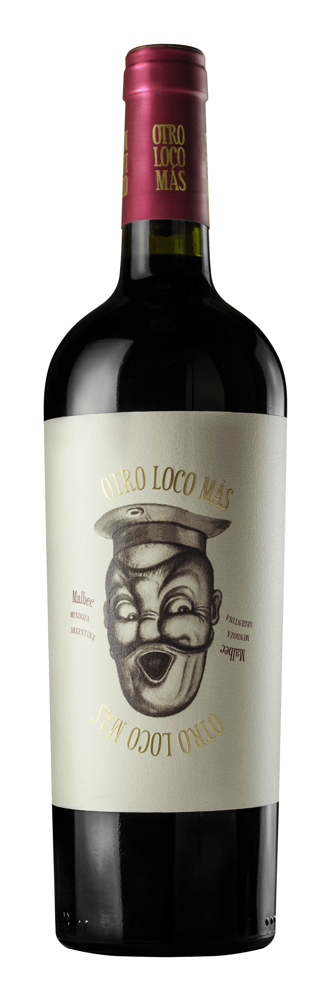
Otro Loco Más es un malbec frutado, de cuerpo agradable, con una interesante presencia de madera. El
vino es de color rubí oscuro con destellos púrpura. Su aroma es agradable, con notas de frutos rojos
y algo de vainilla, gracias a su paso por barrica de roble.
Valle Las Acequias - Malbec
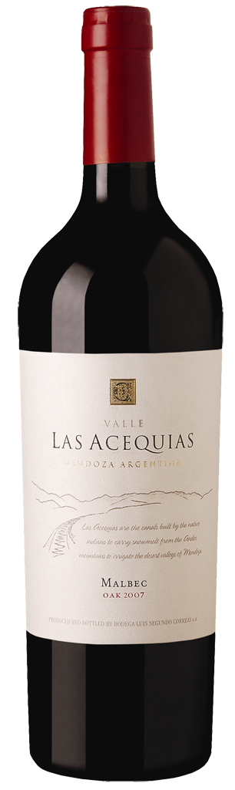
Color: Profundo, de intenso rubí y enmascarados violetas. Aroma: Frutas rojas, con sutiles notas de
tabaco y chocolate. El Roble aporta un elegante ahumado y toques de vainilla. Sabor: Concentrado,
equilibrados taninos y de gran persistencia.
Zuccardi Serie A - Malbec
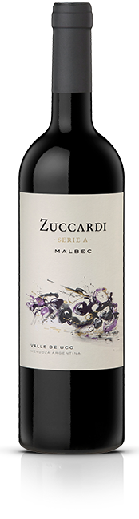
Parte del vino fue criado en roble Francés. Notas de Cata: Color rojo púrpura profundo y vivaz. Aroma
intenso de frutas rojas maduras como cerezas, ciruela, guindas, conjugadas con notas de chocolate,
licor de cerezas, tabaco y especias. Entrada en boca voluptuosa, buen desarrollo, taninos firmes y
deliciosa jugosidad.
Zuccardi Q - Malbec
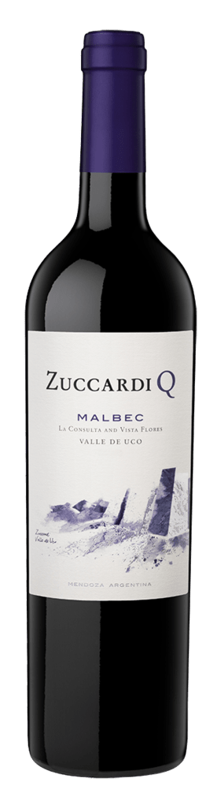
Intensos aromas a frutas rojas y negras como cereza, casis y mora. La crianza en roble francés aporta
notas de tabaco y chocolate.. Entrada suave y sedosa, gran estructura con taninos dulces.
Terrazas Reserva - Malbec
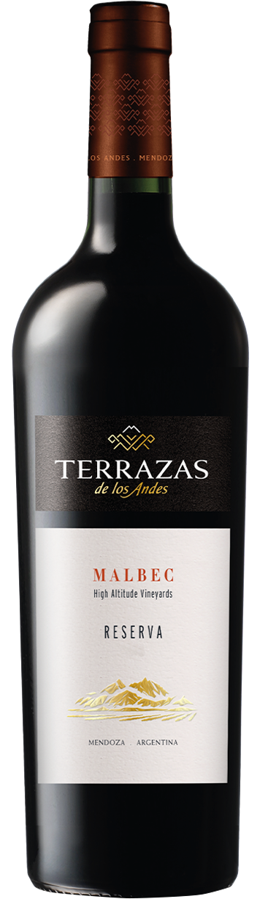
Estos vinos de alta calidad se caracterizan por su frescura e intenso aroma y sabor frutado, con
taninos suaves y estructura equilibrada. Son ideales para toda ocasión y se destacan por su
ductilidad para acompañar diferentes tipos de comidas.
Septima Obra - Cabernet Sauvignon
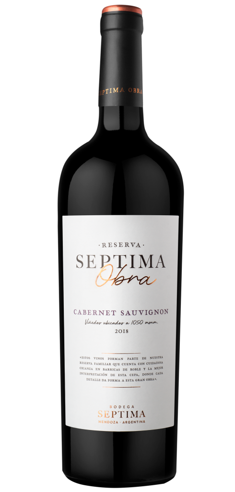
Color rojo brillante profundo con matices púrpuras. Dulce de frutos negros, mora, ciruelas frescas en
mermelada y lácteos como el yogurt de frutilla. Se suman aromas a vainilla y chocolate negro, en
perfecto equilibrio con los aromas varietales.
Sapo de otro pozo - Blend
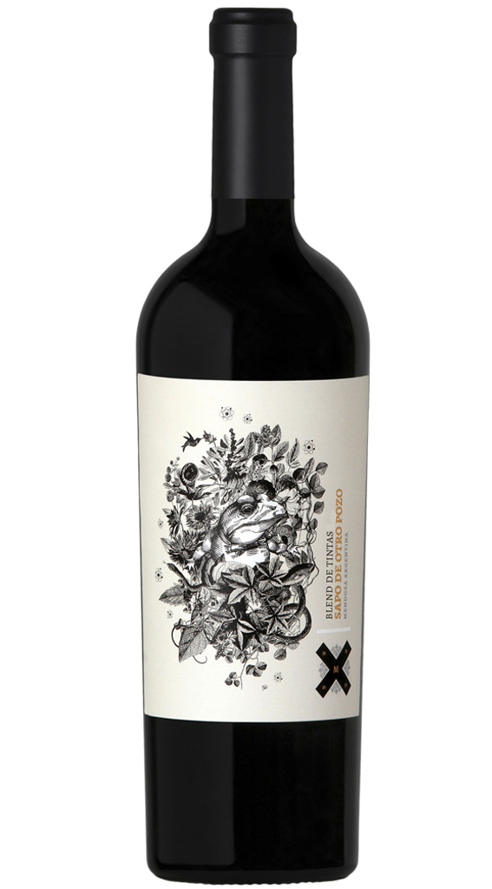
Rubí profundo con tonos violáceos brillantes. Despliega un compleja aromática frutal que recuerda a
ciruelas, cerezas, moras y los arándanos junto a tonos especiados y tostado. Con unos minutos en
copa logra un perfil balsámico y elegante con cierto tono herbal.
Privado - Tempranillo
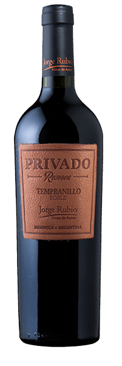
Reconocidos por su singular etiqueta de cuero, poseen una impactante coloración propia de cada
variedad y un cuerpo extraordinario con lágrimas gruesas y muy elegantes. Sus aromas y sabores
intensos, largos y muy complejos, son realmente asombrosos.
Tonalidad rojo rubí intensa, con reflejos violáceos, de gran intensidad. Aromas a frutos negros
maduros, moras y grosellas con notas de vainilla tostada aportadas por su paso por barricas de
roble.
Portillo - Malbec
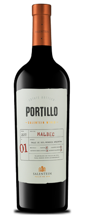
Es un vino de color rojo violeta intenso brillante. Nariz frutada donde prevalecen frutas rojas
frescas (ciruelas y moras) sin aromas a cocido o mermeladas. En boca se presenta de entrada fresca
debido a su acidez natural, sensación frutal, taninos redondos o maduros, final dulce y largo.
Portillo - Rose
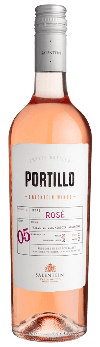
Vista: se muestra en copa de color rojo cereza brillante. Nariz: aromas muy sutiles de rosas, cerezas
y frambuesas. Boca: imponente en boca, con una carácter pleno, taninos muy tiernos.
La Linda - Rose
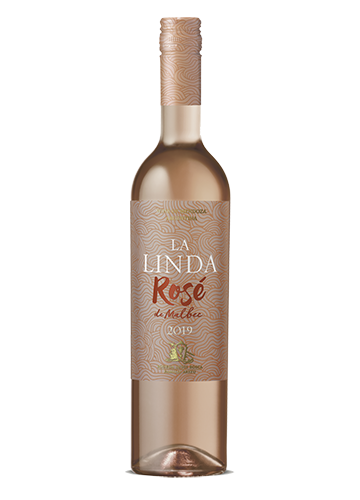
Rosado de aspecto pálido y brillante, de aromas frescos y expresivos que recuerdan a frutillas y
ciruelas. Su paladar es franco y vibrante, con gracia y buen cuerpo. Es un vino vivaz, de paso
amable y voluptuoso, con fuerza, carácter frutal bien definido y un agradable final de boca.
D. V. Catena - Chardonnay
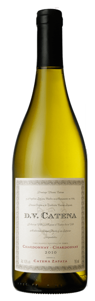
Vino de color amarillo intenso con reflejos verdosos claros. Presenta aromas concentrados e intensos, a frutas tropicales como el durazno blanco y el ananá y notas minerales y cítricas.
Colome - Torrontes
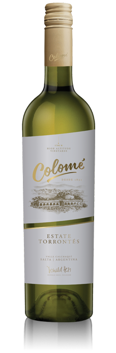
Colomé Torrontés es una interpretación delicada, elegante y sofisticada de esta variedad, con notas
florales de rosas combinadas con aromas cítricos y un toque picante que lo convierte en compañero
ideal de comidas étnicas, como la mexicana, peruana e incluso mariscos.
Salentein - Chardonnay

Aroma complejo, se destacan notas cítricas, durazno blanco, con toque florales. En la boca es suave, amplio y fresco, con notas frutales y minerales. Su acidez natural lo hace un vino fresco y su paso por roble y trabajo sobre borras le confieren elegancia y untuosidad.
La Linda - Chardonnay
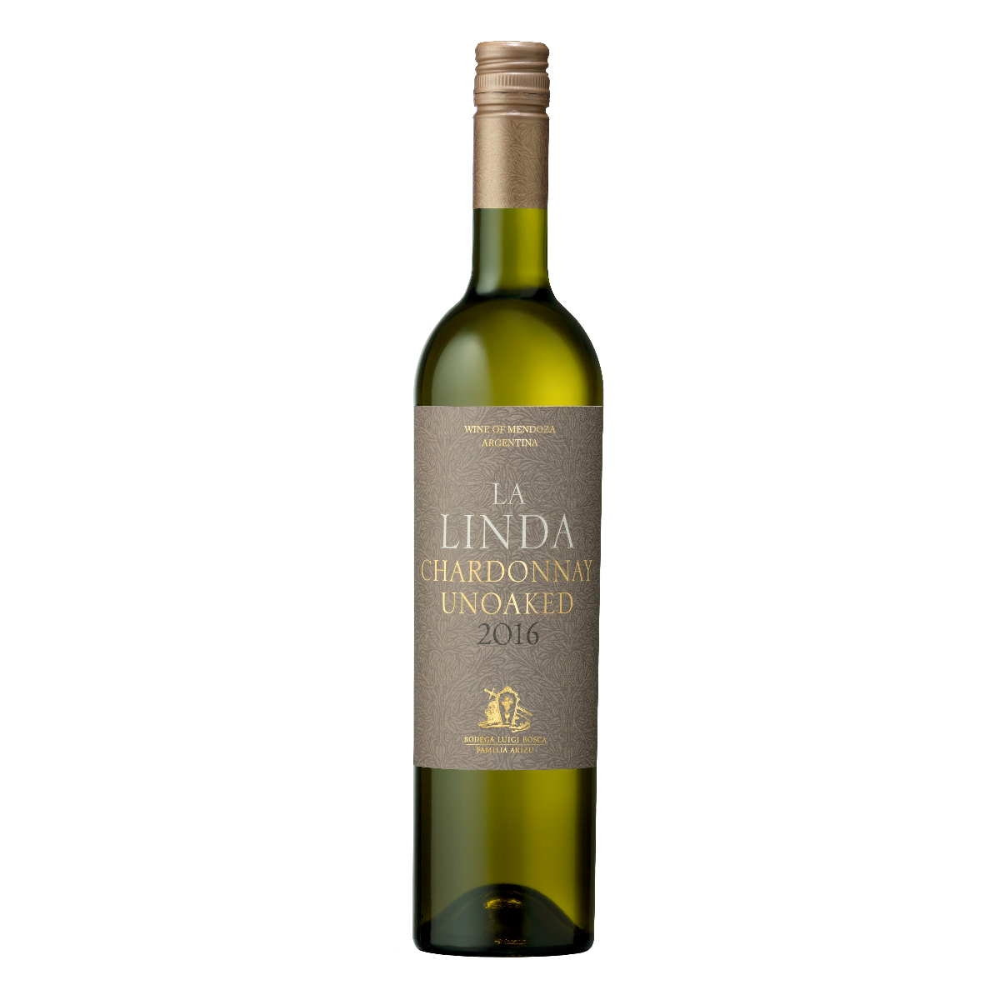
Es un vino de color amarillo brillante con reflejos dorados y verdosos. Sus intensos aromas frutales típicos de la variedad, que recuerdan a pera, manzana verde y durazno blanco, son una clara evidencia de su juventud.